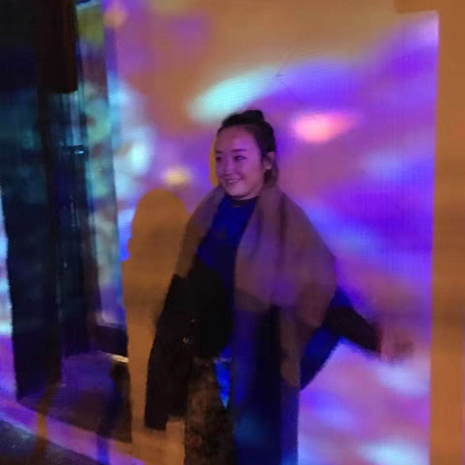

A bit about myself

A full stack interaction designer who can both design and code with a passionate to create better experiences for people.
I have a background in social work prior to diving in the world of UX design. I believe social workers and human centred designers share the common ground of helping the world to be better and placing people at the centre of their day-to-day work - an empathetic approach.
I'm always excited about solving problems and never afraid of digging deep into the core. Creativity is what I hold dearly in my heart. User experience design seems a perfect match to have both. So here I am, exploring a new field and have never been happier.